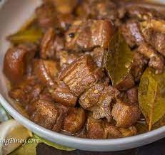

Pork Adobo

What is Pork Adobo
The cooking method for the Philippine adobo is indigenous to the Philippines. The various Pre-colonial peoples of the country often cooked or prepared their food with vinegar and salt to preserve them in the tropical climate.
Vinegar, in particular, is one of the most important ingredients in Filipino cuisine, with the main traditional types being coconut vinegar, cane vinegar, nipa palm vinegar, and kaong palm vinegar. These are all of which are linked to traditional alcohol fermentation.
Ingredients
- 1 cup distilled white vinegar
- 1 cup soy sauce
- ½ cup ketchup
- 1 tablespoon minced garlic
- 3 bay leaves
- 1 teaspoon fresh-ground black pepper
- 2 ½ pounds lean pork, cut into 1 inch cubes
- 1 pound small green beans, trimmed (Optional)
Cooking Steps
- Stir together the vinegar, soy sauce, ketchup, garlic, and bay leaves in a large saucepan. Add the cubed pork, and bring to a boil over high heat.
- Reduce heat to medium-low, cover, and simmer until the pork is tender, about 2 1/2 hours. Stir occasionally. If using the green beans, add them during the last half hour of cooking.